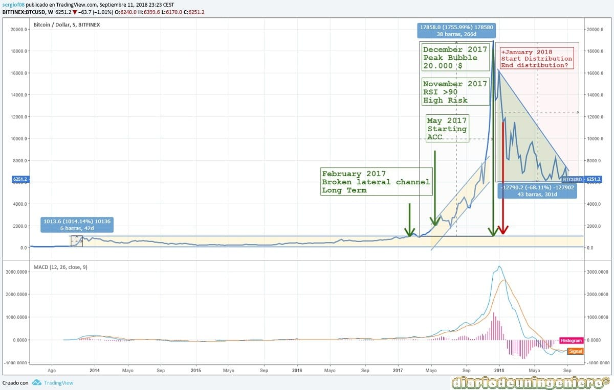

Subida del Bitcoin
Como ya dije el año pasado, el Bitcoin tenía ya muchas probabilidades de ralizar una caída, ahora bien, nadie sabe a ciencia cierta si era para corregir un 50% o para corregir toda la subida. Y esa subida que va a corregir desde cuando, ¿desde 2016, 1000$?, ¿2017, 10000$?. Siendo la subida logarítmica el valor más probable eran de unos 7000$.

Al igual que tras la subida del Bitcoin otras criptomonedas experimentaron una subida superior al Bitcoin con las caídas del Bitcoin ocurriría lo mismo ya que muchas tienen su precio de referencia en el Bitcoin. Además esta el factor de la confianza y el miedo que si la moneda referencia empieza a caer los que tengan otras monedas menos conocidas intentarán deshacerse de ellas a toda prisa.
2018 - Pinchando la burbuja
Si el año 2017 será recordado por el boom de las criptomonedas este lo será por el desengaño de las mismas.
La siguiente figura muestra el recorrido del Bitcoin desde la subida logarítimica que tuvo lugar a finales hasta hoy, septiembre de 2018.
En ella se puede ver las distintas fases por las que ha pasado el precio del Bitcoin.
- 1 : Al romper el precio de los 10000$ pasa a un tipo de subida mucho más acelerada en la que empieza a entrar el valor en distribución. El MACD indica como a partir del 10 de diciembre empieza a bajar el indicador, más tarde se cruzarían las medias y empezaría a corregir, si bien nadie sabría hasta cuanto, a partir de los 11000$ hay un rebote, que sería de gato muerto no alcanzando batir los máximos de 20000.
Debido a esto deja una figura bastante bajista de HCH. por lo que el pronóstico sería que se fuese a mínimos de 6000 de golpe
- 2 : Esto no sucede de golpe pero al perder el nivel de los 7000 puntos todo hace presagiar un nuevo canal mucho mas vartical con l que el valor podría llegar a los 3000$.
- 3 : Sin embargo ahí al rebasar el nivel de ls 9000$ confirmaría subirse al canal anterior, y aun siendo bajista a largo plazo volver a la senda que empezo mucho antes con destino los 6000$
- 4 : Al rebasar de nuevo los 9000$ nos encontrabamos ya en el canal lateral con mínimos ligeramente inferiores a los 6000$ y máximos en los 10000$.
A partir de aqui podemos sacar una conclusión, el Bitcoin nunca más volvera a tener estas variaciones tan grandes en su valor.
Ocurre con la mayoría de los valores nuevos en bolsa en las que tienen una fase de testeo y luego va produciéndose una fase de asimilación del precio en el mercado teniendo mínimos crecientes y máximos decrecientes.
Todo indica a que seguira lateral en este canal por mucho tiempo y que ira subiendo poco a poco. Aunque debido a que no es un valor cuantificable es mucho azar y yo soy de los que defiendo no estar metido en criptomonedas, ya que no hay datos fundamentales como son las empresas con los resultados financieros que presentan año tras año. Solo puedes basarte en el técnico y en la intuición, y en bolsa la intuición solo no vale. De perder los 6000$ podriamos terminar con la hipótesis anterior luego sería un nivel crítico a vigilar.
![[Valid RSS]](https://www.feedvalidator.org/images/valid-rss-rogers.png "Validate my RSS feed")